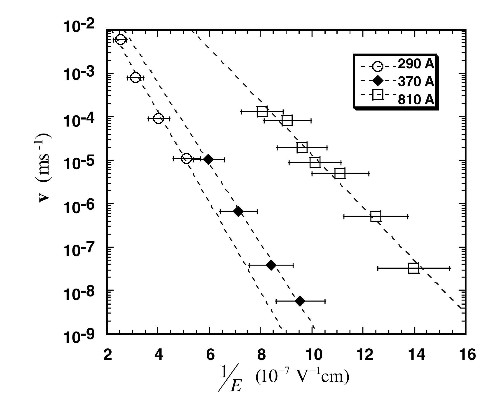
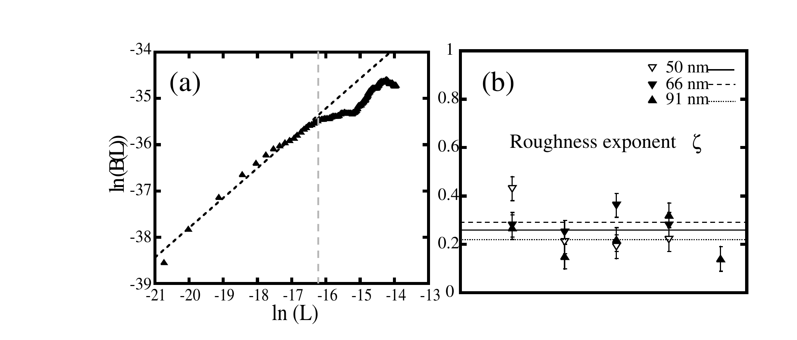
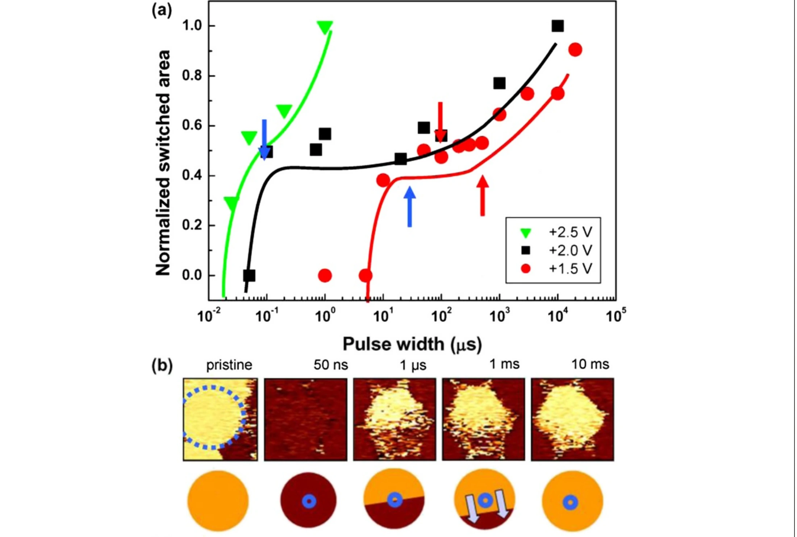
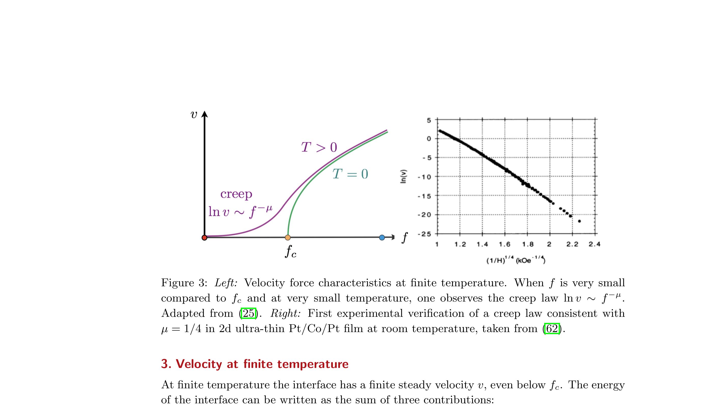

为什么真实畴壁不会匀速、笔直地走？
上一章已经把 翻转 的真正运动自由度落到了 畴壁。现在问题变得更具体：一堵墙为什么会停、为什么弱场下速度不是线性响应、为什么墙的形状会随观察尺度变粗糙？这一章把 外部驱动、弹性代价、淬火无序、局域 钉扎 放进同一条证据链。
权威来源：项目 Google Drive 中的 published PDF。作者原文使用可选择、可搜索的 HTML 真文本；仅恢复跨栏/跨页阅读顺序、行尾断词、ligature 与数学上下标。Figure 均从对应 PDF 600 DPI 页面精裁为无损 PNG，点击查看原尺寸。
局域或统计势垒阻止界面自由滑动。
低驱动力下由热激活帮助界面跨越无序势垒。
界面位移涨落随长度尺度的统计标度，而不是“看起来毛”。
驱动跨过临界阈值后的持续运动与临界标度，留到 Module 05。
1 · Tybell 2002：先从速度律建立 蠕变 的实验语言
导电 AFM 探针 写入 PZT 畴，改变 脉冲宽度，再从半径随时间的变化提取 畴壁速度。
逆电场 1/E。越往右代表驱动力越弱。
畴壁 速度，对数尺度，跨越约 7 个数量级。
Figure 2(a) shows domain radius as a function of pulse width, and three piezoelectric images of ferroelectric domain arrays written with 50 μs, 1 ms, and 100 ms voltage pulses. As can be seen, varying the writing time (pulse width) markedly changes the size of the AFM-written domains. We observe that domain radius increases logarithmically with increasing writing time for times longer than ≈20 μs. Below 20 μs, and down to 100 ns, the shortest times investigated, domain radius is found to be constant and approximately equal to 20 nm, as shown by the shaded area in Fig. 2(a) [19]. All of our data suggest that this minimum domain size is related to the typical tip size used for the experiments, whose nominal radius of curvature is ≈20–50 nm. In previous studies, we have observed that domain size also depends linearly on writing voltage, above a threshold related to the coercive field [19]. A detailed analysis of the data reveals only well-defined homogeneous domains with regular spacing, as can be seen in the piezoelectric image of a regular 90-domain array, written with 1 ms pulses in Fig. 2(b). We note that the topographic image of the same area is featureless, with a rms roughness of ≈0.2 nm. Within our ≈5 nm resolution we do not detect any randomly nucleated domains. The data thus suggest a two-step domain switching process in which nucleation, originating directly under the AFM tip, is followed by radial motion of the domain wall outwards, perpendicular to the direction of polarization.
作者先用空间图像确认：写入后没有不断出现新的随机小畴，而是已有畴的边界向外扩张。因此后面从畴半径随时间的增长提取速度，主要是在测横向畴壁传播，而不是把持续成核误当成畴壁速度。
Figure 3 shows the wall speed as a function of the inverse field for three different film thicknesses. The data fits well to a creep formula v ∼ exp[−(R/kBT)(E0/E)μ], with μ = 1. The exact dynamical exponent μ is found to be 1.12, 1.01, and 1.21 for the 290, 370, and 810 Å thick films, respectively, with an estimated 10% rms error on the field [20]. We find the effective “activation energy” [R/(kBT)]1/μE0 to be 1.32, 1.30, and 0.50 MV/cm for 290, 370, and 810 Å thick films, typically 1 order of magnitude larger than the applied fields during the polarization process [21]. Integrating dt/dr = 1/v using the creep expression leads to r ∼ V with a slowly varying logarithmic correction factor of the form ln[(t + c)/V], where c is an integration constant. This is in agreement with the experimentally observed linear dependence of domain size on writing voltage [19], and further supporting creep as the mechanism of lateral domain wall motion.
Let us now consider the possible microscopic origins of the observed creep behavior. Creep phenomena are a consequence of competition between the elastic energy of a propagating interface, tending to keep it flat, and a pinning potential, preventing it from simply sliding when submitted to an external force. The dynamical exponent in the creep scenario depends on both the dimensionality of the system, and the nature of the pinning potential. Although creep processes are generally associated with the glassy behavior of disordered systems, they can also be observed in a periodic potential if the dimensionality of the object is larger than or equal to 2. For thick films, as for bulk ferroelectrics, the domain wall is a two-dimensional object. In this case, from free-energy considerations, and neglecting the anisotropic dipole field present in a ferroelectric, one would expect the exponent to be μ = 1 [1]. In PbTiO3, it has been shown theoretically that domain wall energy depends upon whether the wall is centered on a Pb or Ti plane [23,24], giving rise to an intrinsic periodic pinning potential. One possible explanation could thus be that the observed creep is due to the motion of the two-dimensional wall in this periodic potential. Note that this scenario is a generalization of the nucleation model developed for bulk ferroelectrics [14]. In order to test this hypothesis we calculated the size of the critical nucleus, using the formula derived by Miller and Weinreich [14]. To estimate l*, the critical length along the c axis, we used the standard remanent polarization, lattice parameters, and dielectric constant values for PZT, the 169 mJ/m² domain wall energy derived for PbTiO3 [24], and the corrected values for the electric field across the ferroelectric film. We find l* to vary, depending on the field range, between 200 and 500 Å, 600 and 1100 Å, and 900 and 1700 Å for the 290, 370, and 810 Å films. The critical nucleus would thus need to be larger than the thickness of the system. Furthermore, the effective “activation energy” calculated for the nucleation model is 2 orders of magnitude greater than the 0.5–1.3 MV/cm determined experimentally. Calculations directly starting from the periodic potentials given in [24] lead to similar conclusions. These results strongly suggest that the films are in a two-dimensional limit, and that the nucleation model, or equivalently, motion through a periodic potential, does not adequately explain the experimental data [25].
The creep behavior thus has to be due to the glassy characteristics of randomly pinned domain walls in a disordered system, with the dynamical exponent dependent on the nature of the disorder. Defects locally modifying the ferroelectric double-well depth U0 and giving rise to a spatially varying pinning potential would lead to a “random bond” scenario similar to the one for the ferromagnetic domain walls [6]. The exponent μ would be μ = (d − 2 + 2ζ)/(2 − ζ) where ζ is a characteristic wandering exponent and d the dimensionality of the wall. For one-dimensional domain walls μ = 1/4, whereas for two-dimensional ones μ ≈ 0.5–0.6. These estimates are based on only short range elastic forces. Including long range interactions could lead to a higher value of μ. Another possibility is that the defects induce a local field, asymmetrizing the double well, or that there are spatial inhomogeneities in the electric field. In this “random field” scenario ζ = (4 − d)/3 [26] leading to μ = 1 for 1 < d < 4, compatible with the observed data. Directional internal fields due to disorder, possibly related to oxygen vacancies, have in fact been reported in ferroelectric systems, such as LiTaO3 [27,28], and could give rise to random field behavior. We also note that recent studies [29,30] have shown that oxygen vacancies or structural disorder can pin domain walls and hence affect their dynamics. However, further study, for instance determining the wandering exponent, is needed to ascertain the exact nature of the disorder.
作者发现畴壁速度随电场减弱而急剧下降，并能用蠕变形式描述。随后他们比较“周期晶格势垒”和“无序弹性界面”两种解释，指出实验中的有效势垒尺度与简单本征周期势图像不相容，因此转向无序钉扎的解释。

往右是更小的 E；纵轴是对数速度。三组厚度的数据都被 蠕变 形式描述。读图时不要把某个 x 位置误当成“退钉扎阈值”：这张图建立的是低驱动力热激活动力学。
作者真正证明了什么
这些 PZT 薄膜中，写入后的扩张由 横向畴壁运动 主导；其速度在实验区间符合 蠕变 关系；简单的周期晶格/成核图像 无法解释能垒尺度。
作者没有证明什么
没有建立 退钉扎 临界点；也没有仅凭 μ 唯一确定 无序 普适类。作者自己把“还需要 游走指数”写进结论。
2 · Paruch 2005：粗糙度 是尺度律，不是“墙看起来很毛”
畴壁相对最佳平直位置的横向位移 u(z)。
B(L)=⟨[u(z+L)−u(z)]²⟩，比较相隔 L 的两点。
随机流形 区间 B(L)∝L2ζ；log–log 斜率是 2ζ。
From these measurements, we extracted the correlation function of relative displacements B(L) = ⟨[u(z + L) − u(z)]²⟩, where the displacement vector u(z) measures the deformation of the domain wall from an elastically optimal flat configuration due to pinning in favorable regions of the potential landscape. ⟨···⟩ and overbar denote the thermodynamic and ensemble disorder averages, respectively. Experimentally, the latter is realized by averaging over all pairs of points separated by the fixed distance L, ranging from 1 to 500 pixels (5 or 10 nm–2.5 or 5.0 μm, depending on the image size) in our measurements. As shown in Fig. 1 for two of the films used, we observe a power-law growth of B(L) at short length scales, comparable to the ≈50–100 nm film thickness, followed by saturation of B(L) in the 100–1000 nm² range [29].
From the power-law growth of B(L) at these short length scales, we extract a value for the roughness exponent ζ. This exponent characterizes the roughness of the domain wall in the random manifold regime where an interface individually optimizes its energy with respect to the disorder potential landscape and B(L) scales as B(L) ∝ L2ζ. As shown in Fig. 3(a), a linear fit of the lower part of the ln[B(L)] versus ln(L) curve allows 2ζ to be determined. Average values of ζ ≈ 0.26, 0.29, and 0.22 were obtained for the 50, 66, and 91 nm thick films, respectively, indicated by the horizontal lines in Fig. 3(b).
Paruch 把“畴壁看起来不直”变成了可计算的统计量：先定义畴壁位移 u(z)，再计算相隔 L 的两点之间的位移差平方平均 B(L)，最后只在短尺度幂律区间提取 ζ。

(a) 虚线左侧才是作者用于线性拟合的区间，斜率给 2ζ；(b) 不同厚度样品得到 ζ≈0.22–0.29。关键是“在哪个 L 区间做标度”，而不是肉眼比较哪堵墙更弯。
In addition to the investigations of static domain wall roughness described above, we independently measured domain wall dynamics in each film, using the approach detailed in [16,17]. As shown in Fig. 4, we observe the nonlinear velocity response to applied electric fields characteristic of a creep process, with values of 0.59, 0.58, and 0.51 for the dynamical exponent μ in the 50, 66, and 91 nm thick films, respectively. These μ values are lower than the μ ≈ 1 reported for three films in [16], but consistent with all the subsequent measurements performed on 9 other films, all grown under similar conditions, where an average μ value of ≈0.6 was found [34].
When these data are analyzed in the theoretical framework of a disordered elastic system, they provide information on the microscopic mechanism governing domain wall behavior. The direct measurement of domain wall roughness clearly rules out the lattice potential as a dominant source of pinning. In that case, the walls would have been flat with B(L) ≈ a², where the lattice spacing a ≈ 4 Å is the period of the pinning potential [31]. Given the stability and reproducibility of the wall position over time, shown in Fig. 2, the effect of thermal relaxation on the observed increase of B(L) can also be ruled out. The measured roughness must thus be attributed to disorder. Two disorder universality classes exist, with different roughness exponents. Random-bond disorder, corresponding to defects maintaining the symmetry of the two polarization states, would change only the local depth of the ferroelectric double well potential. Theoretically, this disorder would lead to a roughness exponent ζRB = 2/3 in deff = 1 and ζRB ≈ 0.2084(4 − deff) for other dimensions. Random field disorder, corresponding to defects that locally asymmetrize the ferroelectric double well, would favor one polarization state over the other. Such disorder would lead to a roughness exponent ζRF = (4 − deff)/3 in all dimensions below four. Should the wall be described by standard (short-range) elasticity, deff in the above formulas is simply the dimension d of the domain wall (d = 1 for a line, d = 2 for a sheet). However, in ferroelectrics the stiffness of the domain walls and thus their elasticity under deformations in the direction of polarization is different from the one for deformations perpendicular to the direction of polarization because of long-range dipolar interactions [24].
Using the above expressions for the roughness exponent we see that the measured ζ ≈ 0.26 value would give deff ≈ 3 for random field disorder, ruling out this scenario. On the other hand, random-bond disorder would give deff ≈ 2.5–2.9, a much more satisfactory value, which is compatible with a scenario of two-dimensional walls (sheets) in random-bond disorder with long-range dipolar interactions.
This conclusion can be independently verified by the dynamic measurements, since the creep exponent μ is related to the static roughness exponent ζ via μ = (deff − 2 + 2ζ)/(2 − ζ). The values of these two exponents from the independent static and dynamic measurements can therefore be used to calculate deff. For the 50, 66, and 91 nm thick films we find deff = 2.42, 2.49, and 2.47, respectively, in very good agreement with the expected theoretical value for a two-dimensional elastic interface in the presence of disorder and dipolar interactions. Taken together, these two independent analyses provide strong evidence that the pinning in thin ferroelectric films is indeed due to disorder in the random-bond universality class. The precise microscopic origin of such disorder is still to be determined. Preliminary studies of domain wall dynamics in pure PbTiO3 films gave comparable results to those for PbZr0.2Ti0.8O3, suggesting that the presence of Zr in the solid solution is not a dominant factor, and that other defects presumably play a more significant role. Note that for the short-range domain wall relaxation observed, the walls are in the two-dimensional limit. However, if equilibrium domain wall roughness could be measured for larger L, a crossover to one-dimensional behavior would be expected, with a roughness exponent ζ = 2/3.
作者把粗糙度指数与先前测得的蠕变指数放在一起比较，希望用两个独立可观测量约束无序类型和弹性形式。这个论证仍然依赖模型假设，并没有直接看见某一种具体随机键缺陷。
作者真正证明了什么
短尺度 B(L) 存在可量化的 幂律 粗糙度；静态 ζ 与动态 蠕变 μ 在其弹性模型下共同支持 随机键 无序 + 长程 偶极 interactions 的解释。
作者没有证明什么
没有直接成像出“随机键 缺陷”本身；结论依赖无序弹性界面理论、有效维数与弹性核。大尺度 饱和 也不能被硬拟合成同一个 ζ。
2.7 · 粗糙度 验收 判据：ζ 不是从任意 log–log 直线里读出来
Paruch 的关键动作是先限定 短尺度 随机流形 区间，再拟合 B(L)。把这个方法搬到 相场 / 退钉扎 simulation 时还要再严格一步：先证明 畴壁 extraction 有效，再区分 紫外截止、scaling 区间 与 红外截止，并用 实空间、傅里叶空间、全局宽度 三类 估计量 互相检查。
2.7.1 · 三个常用 可观测量 回答的是不同尺度问题
对普通 单仿射 自仿射 界面，这些指数在适当 标度区间 中可以相容；但这是一条待检验的结果，不是定义。尤其当 ζglob>1、存在 异常标度、多仿射性 或大 悬垂 时，局域/全局/谱指数 可能不再相同。
2.7.2 · 先画 尺度 mask：畴壁 core 以下和 体系 size 附近都不是免费数据
| 尺度区 | 主要污染 | 处理原则 |
|---|---|---|
| UV · r≈dx / 畴壁 width | grid、diffuse-core、等值线 jitter、插值 | 预先屏蔽；dx 加密 后物理下限应稳定 |
| 候选 scaling 区间 | 可能仍有 交叉区 | 看 有效斜率 平台区 + 估计量 交叉核验 |
| IR · r≈L / few q 模式 | finite size、periodicity、去趋势、低模数不足 | 不把 饱和 / 最低波数模式 强行纳入幂律 |
因此“用了更多点”不一定更可靠。一个跨越 紫外交叉区、真正 scaling 区间 与 红外饱和区 的长直线，可能只是在 log–log 图上把三种偏差平均了。
2.7.3 · 用 局域 有效斜率 找 平台区，不用肉眼挑直线
主 区间 应由预注册 尺度 mask + 有效斜率 stability 共同决定。窗口向内/向外移动一档时，ζ 若系统漂移而没有 平台区，就先报告 在已测试尺度区间得到的有效粗糙度指数，不要升级为 渐近 ζ。
预先定义 嵌套区间；每个 来源 都用同一规则，不按单条曲线挑最好看的区间。
B(r)、S(q)、W(L) 的适用尺度不同，但应检查它们是否支持同一种 标度类型。
轻微改变 等值线 阈值 / 插值 后 ζ 不应显著跳变；否则还在测 畴壁 core / extraction method。
2.7.4 · 去趋势 是物理选择，不是“预处理一下”
若 u(y) 含整体倾斜，可先减去注册好的低阶趋势；但 去趋势阶数 必须固定。过高阶 多项式 会直接吸收真实 长波长 粗糙度，让 S(q) 的低 q 与 W(L) 人为变平。推荐同时保存 原始 u(y) 与去趋势后的 u(y)，并把 去趋势规则 写进 估计量记录。
2.7.5 · 指数分裂不一定是失败，可能是新的 标度区间
出现 ζloc≠ζglob≠ζspec 时，先按 generic anomalous-标度类型 检查，而不是把三个数平均。若不同阶位移结构函数
还给出系统性的 ζn 分裂，则可能进入 多仿射 / 多重标度 情形。Guyonnet 2012 在 铁电 DW 中就观察到：较短尺度可以近似 单仿射，而更大尺度因局域 无序 variations 出现更复杂的 多重标度。这个结果应该被当作交叉区 / 缺陷结构信息，不是“粗糙度拟合坏了”。
2.7.6 · 统计单元仍然是 淬火无序样本，不是 r 分箱、q 模式 或 帧
同一堵 畴壁 的很多 r 分箱、Fourier 模式、轨迹帧 高度相关。它们提高单个 来源 的曲线分辨率，却不增加 无序总体 的 外层样本数。跨 来源 uncertainty 应在 来源 层级 做 自助法 / 分层汇总；若一个 来源 在多个 场 或 time 上重复，也应保留配对结构。
2.7.7 · 拓扑 判据 优先于 指数 判据
如果 等值线 出现 持续 悬垂、封闭小畴、多重交点 或 畴壁 分裂，首先触发的是 单值-界面 映射 failure。可以研究 外边界、团簇形貌、界面 density 或 多值 等值线 几何，但不能继续把一个任意投影后的 u(y) 指数 称作 弹性线 ζ。
| 等级 | 最低要求 | 允许措辞 |
|---|---|---|
| R0 · visual | 一段 log–log 近似直线 | apparent / illustrative 粗糙度 |
| R1 · stable 区间 | UV/IR mask + 有效斜率 平台区 + 区间 敏感性 | 粗糙度指数 候选 |
| R2 · 跨估计量 | B/S/W 与 extraction/去趋势 敏感性 支持同一 标度类型 | 粗糙度 scaling supported over tested 尺度 |
| R3 · cross-可观测量 | 来源层级 uncertainty + 粗糙度 与独立 v(E)/有限尺寸 证据 相容，且 映射 判据 存活 | strong 普适性 证据, not 指数 匹配 alone |
3 · Kim 2014：单个局域缺陷就能让纳米器件“停住—再走”
改变 脉冲宽度；不是连续电影，而是一系列写入后 PFM 快照。
归一化 翻转面积 出现暂时平台，然后重新增长。
PFM 相位图 显示同一时期墙在具体位置停住，再越过该位置。
However, on considerably decreasing the capacitor size, one local defect may significantly influence the overall domain wall motion. In fact, recent study [7] has shown that the domain wall in nanocapacitors propagates in contact with the capacitor boundary, along which local defects are likely to be present to a larger extent hindering the domain wall motion. Thus, the domain wall pinning can become a more important issue as the capacitor size decreases, and this is directly relevant to the reliability of the device performance. However, to our best knowledge, domain wall pinning has not been reported so far in nanocapacitors of such size that can be feasible for high-memory density devices. Here, we show an unusual domain wall pinning in ferroelectric nanocapacitors and explore its origin using piezoresponse force microscopy (PFM).
Initially, we switched pristine domain structures of nanocapacitors as upwards. This process is referred to as background poling. After the background poling, a series of +2 V pulses with different pulse widths was applied to generate downward polarized domain inside the background poled capacitor. Then, PFM measurements were carried out over the area. As previously reported [1,6,7], the domain wall after the nucleation propagates on increasing the pulse width. However, the domain wall motion is occasionally hindered as shown in Figure 1(a). The normalized switched area temporarily remains constant at a value of around 0.5 [pinning: blue arrows of Figure 1(a)], and then starts to increase again [de-pinning: red arrows of Figure 1(a)] under the applied electric field. This pinning/de-pinning phenomenon was observed only for relatively low amplitude of the applied bias [see for contrast the green solid line of Figure 1(a), plotting data for higher pulse amplitude of 2.5 V]. It has been well known that the pinning procedure is dependent on local point defects, which can hinder the movement of a domain wall [6,8,9-11] and could exist in principle anywhere inside the capacitors [1,12]. However, if there is enough energy is provided to overcome the barrier height imposed by the defects, the domain wall can move through these defects, i.e., a de-pinning phenomenon occurs. As a result, the domain wall motion strongly depends on the correlation between the applied bias pulses and the barrier height of the local defect states. The data of Figure 1(a) demonstrates this behavior.
This switching behavior results can also be illustrated through the PFM phase images shown in Figure 1(b). On increasing pulse width, the domain wall moves from the top side to the bottom side of capatiro imaged in this figure. However, at the middle point [see blue circle in Figure 1(b)], the domain wall motion temporarily ceases, and then the wall moves again towards the bottom part of the figure, till the initial downward polarization state of the capacitor is fully recovered (as marked by the blue-dotted circle). In this case, we believe that there is a local point defect at the center of the capacitor similar to previous reports [6,8,9-11].
Kim 在纳米电容中把整体翻转面积曲线的平台和真实空间中畴壁“停住—再走”的位置对应起来，因此单个局域势垒不再只是统计抽象，而成为可直接观察的局域事件。

(a) 蓝/红箭头分别标出 钉扎 与 退钉扎；(b) 把曲线平台对应回真实空间中的 PFM 停滞—再传播序列与 局域 point 缺陷。第二类 原始畴位置相关 钉扎 由紧邻的作者原文继续给出，因此这里不保留旧资产中被截断的 panel (c)。
However, we also observed a different type of domain wall hindrance as shown in Figure 1(c) for another nanocapacitor. In this case, intriguingly, the domain wall motion and the pinning seem to follow the pristine domain structure underlying the nanocapacitor. The domain wall is first pinned at the center of the capacitor [see blue solid line in the schematics of Figure 1(c): 20 ms], which is close to the domain boundary of the pristine domains. After the de-pinning, the right part of the domain wall moves [see blue solid line in the schematics of Figure 1(c): 200 ms] and then the whole region of the capacitor is finally switched to a downward polarization. This domain wall propagation seems to have a particular relationship with the pristine domain structure. The pristine domain structure shows three distinct sections of domains (upper half part: downward polarization, left lower quarter part: upward polarization, and right lower quarter part: mixed of up- and downward polarization). Even though there are pinning and de-pinning processes, pronounced bowing was not observed in both cases.
In summary, we have investigated domain wall pinning and its origins in ferroelectric nanocapacitors using piezoresponse force microscopy. Similar to previous reports, the observed domain wall pinning was observed due to the existence of local point defects. However, we also observed another type of the pinning source, i.e., pristine domain structures. It was found that the steps of the domain wall propagation are dependent on the pristine domain structure because locally different defect states in the place of the pristine domains can affect the domain wall motion. In both cases, pinning and de-pinning processes were observed without observation of significant domain wall bowing. The observed results can provide further information on the domain wall motion in nanocapacitors and could improve the reliability of nanoscale ferroelectric memory devices.
作者还观察到另一类与初始畴结构位置相关的钉扎。更谨慎的理解是：背景极化处理后仍残留的局域缺陷态与这些位置相关，并不是“畴本身就是缺陷”。
作者真正证明了什么
纳米电容中可以直接观察到局域 畴壁 pause 与后续 退钉扎；至少有 点缺陷型 与 原始畴位置相关 两类来源；单个局域势垒在小器件中足以显著影响整体 翻转 轨迹。
作者没有证明什么
文中的 “退钉扎” 是越过具体局域 势垒 的描述，并未建立 thermodynamic 临界 阈值、β/ζ/ν、有限尺寸标度 或 普适类。
方法谱系 · 为什么后来不能只拟合一条 蠕变 直线？
把这一章放回历史里，会发现“受驱无序畴壁”的证据标准是逐步长出来的。下面不是把磁畴壁和铁电畴壁说成同一种材料，而是看每一代工作给方法链补了哪一块。
磁畴壁实验把低场 v(H) 的 蠕变 与 畴壁 wandering 放在同一个研究对象上：动力学和几何开始互相约束。PRL 80, 849 · APS official record；当前项目 Drive 未检索到该 PDF。
把 蠕变 语言带入 铁电 DW，而且先用 实空间 畴 growth 论证后续速度主要对应 横向畴壁 传播，而不是持续随机成核。本章 Drive PDF + 原 Figure。
进一步把 蠕变 指数 与独立 粗糙度 可观测量 放在一起，尝试用“动力学 + 几何”区分 无序图像，而不是让一个 μ 独自承担机制判断。本章 Drive PDF + 原 Figure。
把测量从低场 蠕变 扩展到完整 velocity–场 characteristic，明确区分 蠕变、过渡区和高场 流动：单一工作点的幂律被放回完整 动力学区间。项目 Drive 已有正式 PDF。
数值层面强调临界附近的长 瞬态 与 标度修正：有效指数 可以在有限时间窗口里看起来非常稳定，却不是 渐近指数。下一章用原论文展开。
再向前一步，比较不同磁性薄膜和宽温区，把 蠕变 写成跨材料可缩放的 钉扎-能垒 函数。真正的“普适”开始要求跨条件 坍缩，而不只是某个样品里出现一条直线。PRL 117, 057201 · APS official record。
研究方法 · 有限温 蠕变 不是“给 T=0 方程加噪声”就结束
Ferrero 等 2021 的综述把最关键的逻辑写得很清楚：T=0 时 f<fc 没有稳态前进；T>0 后热激活可以跨过 亚稳 barriers，于是阈值以下出现有限平均速度。 但这不意味着所有 f<fc 的有限速度都可以马上塞进一条 蠕变 直线。
At finite temperature, the interface has a finite steady velocity v, even below fc.
有限温下，即使驱动力低于零温退钉扎阈值，热涨落也可以帮助界面跨越亚稳势垒，从而产生有限平均速度。但这不等于整个阈值以下区域都服从同一条蠕变渐近律。

左图把 T=0 退钉扎 与 T>0 蠕变 放在同一条 velocity–force characteristic；右图回顾 Lemerle 的经典低场 蠕变 线性化。真正适合拟合 μ 的是低场、低温、可测的 activated 区间，不是所有 f<fc 点。
quenched 景观 Fp 固定；η 是 热噪声。两者不是同一种“随机种子”。
定义不同 淬火无序景观。要把结论推广到“无序 无序样本”时，统计独立性首先来自这一层。
同一个 quenched 景观 上的重复 随机轨迹，用来估计 条件 热 average / 方差。
同一 轨迹 的时间帧、畴壁 points、等待时间分箱 不是新的 quenched 样本，不能把 n 人为放大。
什么时候才值得拟合 蠕变 指数 μ？
先独立确定同一 畴壁 problem 的 T=0 阈值 尺度；不要用 有限温 蠕变 数据反推一个最方便的 fc。
先从接近阈值但仍 阈值以下 的场找得到稳定 漂移 的区域，再向低场扩。若绝大多数 运行 只给 zero-displacement / velocity 上界，继续向更低场烧时间通常只增加 删失。
初始 畴壁 relaxation、短时局域抖动和真正长期 forward 漂移 必须分开。平均速度要来自稳定 观测 区间，而不是启动后的第一段位移。
若升温后 体相 成核、封闭小畴、multiple walls 大量出现，那么你测到的是 有限温 翻转 动力学，不再是干净的 孤立畴壁 蠕变。
经典 拉伸指数 蠕变 关系 是低 drive 的渐近描述。靠近 fc 会进入 交叉区 / 热-rounding 物理，不能把整个 阈值以下 区域强行用一个 μ 吃掉。